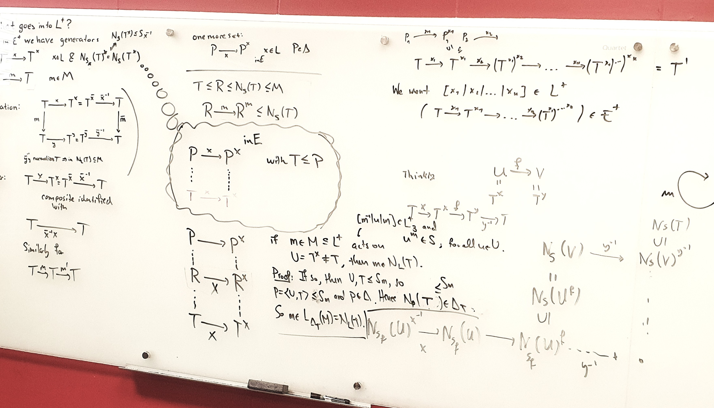

I am a research associate at the RPTU Kaiserslautern-Landau in Kaiserslautern, currently a member of the group of Gunter Malle.
I have completed my PhD at the Technische Universität Dresden under the supervision of Ellen Henke. In my thesis I have worked
on generalizing a profound result about the p-local structure of finite groups, obtained by Meierfrankenfeld, Stellmacher and Stroth, looking for an analogous description of the possible
modules for fusion systems and localities satisfying similar hypothesis. Since then my research scope has widened to encompass more of what is known as the homotopy theory of
fusion systems, which I approach by studying the natural simpicial structure that is carried by localities and partial groups, mathematical objects with a deep connection to fusion systems.
Current collaboratores are Justin Lynd,
Philip Hackney and Rémi Molinier.
Prior to my PhD I have completed my Bachelor and Master Studies at the Università degli Studi di Milano - Statale, focusing my attention on group theory and algebraic topology.
Both my Bachelor and Master dissertations were supervised by Emanuele Pacifici. In particular, my Bachelor dissertation
revolved around methods and techniques for the investigation of finite groups that have been key tools in the classification of the finite simple groups, providing me with a rather
detailed overview of the subject.